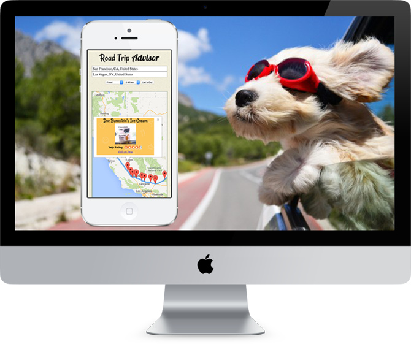

PBrady.net
Developer - Portfolio Site
Road Trip Advisor
Combines Google Map Routes and Yelp 5-star sites.
- Helped create, research and develop this popular travel app
- Developed a Google Map API routes algorithm and a Yelp filtering algorithm
- Created a responsive Bootstrap app front-end with a separate landing page
My Tech:
JavaScript, Google Maps API, Yahoo API, Twitter Bootstrap, NodeJS, PhotoShop, Heroku
Biggest Challenge:
Optimizing the Google MAP and Yelp APIs to get evenly populated waypoints
JavaScript, Google Maps API, Yahoo API, Twitter Bootstrap, NodeJS, PhotoShop, Heroku
Biggest Challenge:
Optimizing the Google MAP and Yelp APIs to get evenly populated waypoints

(Screenshot: Road Trip Advisor)
Chime
Monitors/quizzes for audience comprehension during prof. lectures
- Researched and developed the client-facing portion of this visitor greeting app.
- Developed the client front-end in Facebook React and Bootstrap.
My Tech:
React, Twitter Bootstrap, JavaScript
Biggest Challenge:
Learning React quickly
React, Twitter Bootstrap, JavaScript
Biggest Challenge:
Learning React quickly
Tokki
Company directory app that sends text messages to phone when guests arrive
- Inherited existing codebase, added additional features to reinforce main lecture points.
- Coded a Socket.io communication link between the student’s browsers & the teacher’s browser.
- Enforced coding standards to maintain code quality.
My Tech:
JavaScript, Socket.IO, Scrum Master, HTML/CSS, Firebase
Biggest Challenge: Quickly learning Socket.IO for creatingtwo-way audience interactions.
JavaScript, Socket.IO, Scrum Master, HTML/CSS, Firebase
Biggest Challenge: Quickly learning Socket.IO for creating

Software is such a powerful medium, you can create almost anything. I've been coding since I was a teenager, and software has always held a fascination for me.
I have created several iPhone and iPad apps (in Objective-C). One app even topped out at #4 in the Free section of the App Store (albeit briefly). To grow the app user base, I created features like innovative page transitions and content sharing with the Facebook SDK.
I also localized 26 children's educational software titles for "The Learning Company". Many of these products were written by different teams/software houses. As a localization engineer, I needed to gain intimate product details very quickly and precisely.
These days I’m most at home with JavaScript, jQuery, Twitter Bootstrap, NodeJS/Express, and their brethren. And I use whatever tool is available to make my work easier/faster (Sass, Grunt, Perl, etc.).
To quote my old boss, "Let's do this!".
What have I created?
I have created the front-end of several high-traffic websites in the US, Canadian, and Australian markets. As a web developer, I know I need to be on top of issues like load times, browser compatibility, SEO and usability. So, I'm constantly experimenting with new tools & methods.I have created several iPhone and iPad apps (in Objective-C). One app even topped out at #4 in the Free section of the App Store (albeit briefly). To grow the app user base, I created features like innovative page transitions and content sharing with the Facebook SDK.
I also localized 26 children's educational software titles for "The Learning Company". Many of these products were written by different teams/software houses. As a localization engineer, I needed to gain intimate product details very quickly and precisely.
What I'm Good At
I've always considered myself a front-end person at heart (even when writing iOS apps). Well designed software is a gift, for the users, and other developers. I'm good at creative problem-solving. I like brainstorming software ideas and then following them through to completion. And I love the excitement and confidence that well tested software brings.These days I’m most at home with JavaScript, jQuery, Twitter Bootstrap, NodeJS/Express, and their brethren. And I use whatever tool is available to make my work easier/faster (Sass, Grunt, Perl, etc.).
The Future
I imagine myself working on the front-end and/or full-stack. I'm looking for a place that I can make a creative contribution, using my existing skills and learning new ones.To quote my old boss, "Let's do this!".